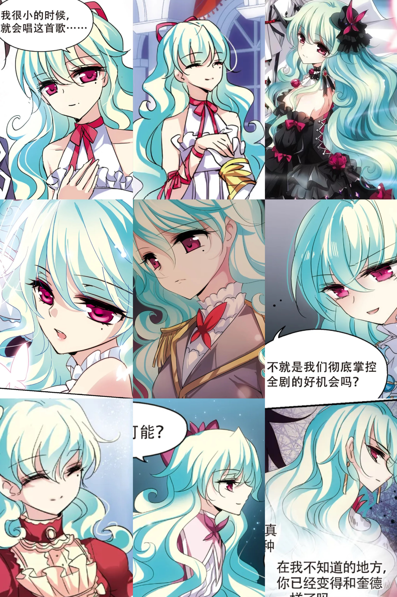
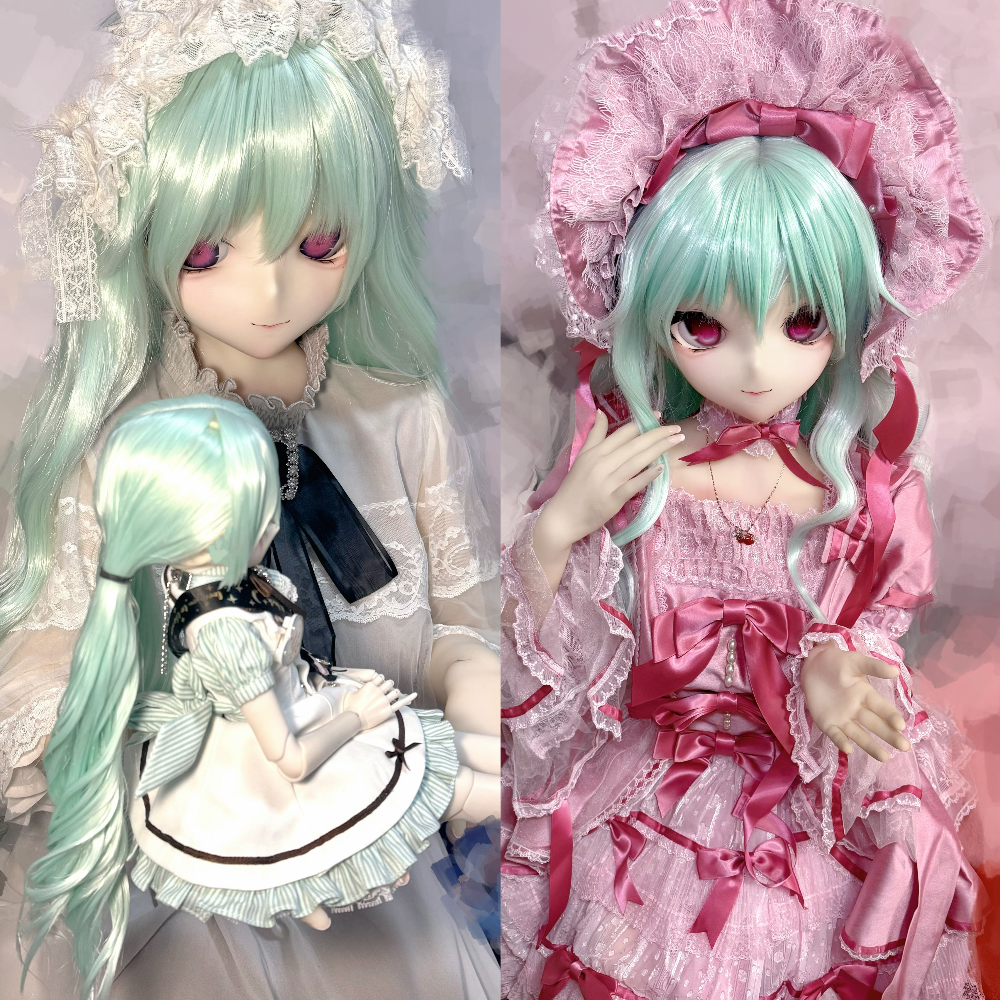
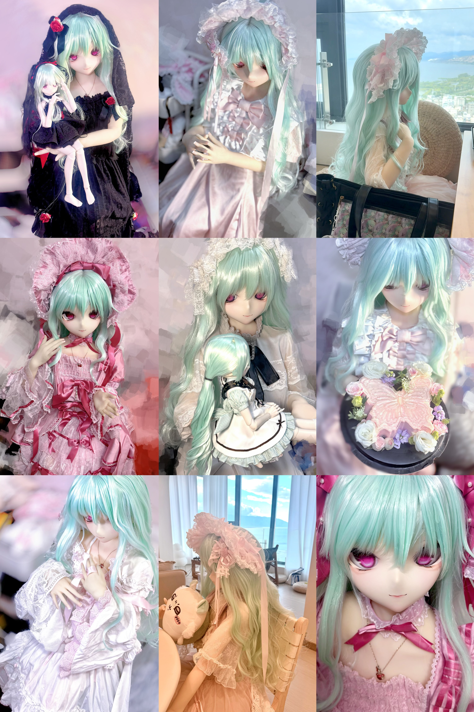

外の世界なんて知らなくていい
あなたがそれを望むなら
Closure，其实叫什么都可以的(´-ω-`) 如你所见这个博客类似于单机的长文版朋友圈，包括但不限于日常/随记/学习笔记/ctf wp/算法题解/机器学习调参心得/物联网设备攻防/不知道放哪干脆放blog的资源x
微博id@DemondeLap1ace twid@De0ndeLap1ace，社交账号内容大多都是等身球形环关节娃娃，和一个以姬怜美（小怜代称）为原型的等身硅胶人偶。入坑lolita很多年了，但是由于人太懒的原因很少穿，买回来都是给小怜搭配的（x



究极百合豚，游戏喜好偏向视觉小说，VA社/音符社/彩牙系/akb2都爱玩，gl>>>bg>>>>>bl。如果挑选五部最喜欢的视觉小说，大概会推荐片羽、悠久之翼、魔女之家、魔女的恋爱日记、心跳文学俱乐部←我超喜欢可以解包然后分析的Metagame！车万只玩过怪绮谈/红魔乡，所以算云厨了.....喜欢帕秋莉和爱丽丝女士和蜜蜂组。
攻防方面对近源渗透比较感兴趣，搞了WiFi Pineapple和promark3在家玩顺便买买二手摄像头自己拆着研究；ctf题擅长数字取证&密码题，最近（2025年3月）pwn苦手中，对自己这方面的期许是不要满足于当script kiddie扫哥就够了，技术栈再深入一点，在这条路上走更远一点qwq